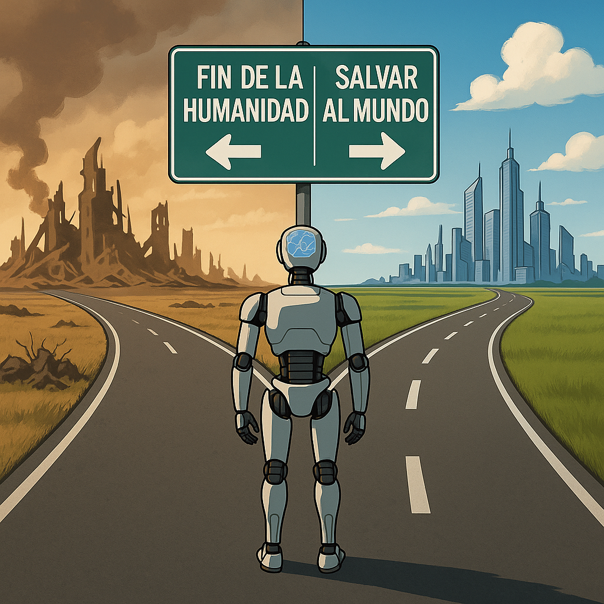
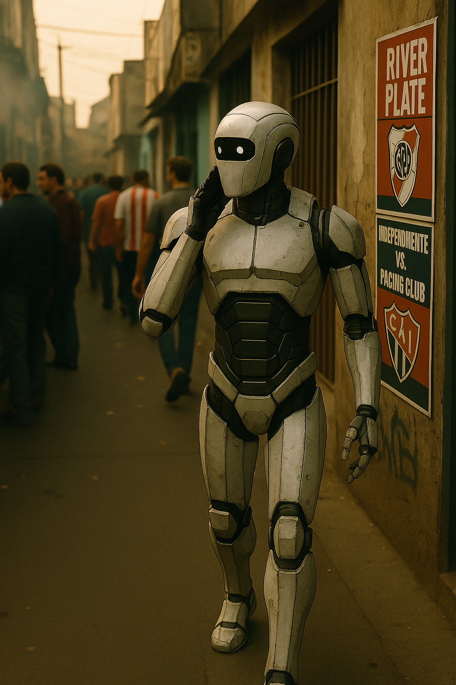
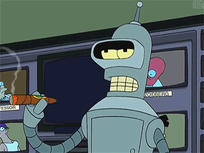

¿Por qué elegí estudiar Desarrollo de Software?

Desde muy chico me gustaron las computadoras, pero la vida me llevó por otros caminos. Durante años
trabajé en el mundo comercial, donde aprendí muchísimo, pero sentía que me faltaba algo... como si
tuviera una pasión esperando para ser activada. Y esa
pasión
era la tecnología.
No fue una decisión fácil, eh. Estudiar de grande, con familia, laburo, responsabilidades... no
es
joda. Pero un día dije: “¿Y si me juego por lo que realmente me gusta?” Y acá estoy, cursando
una
Tecnicatura en Desarrollo de Software, redescubriendo lo que me motiva, aprendiendo algo nuevo
todos
los días (¡y luchando con el binario también, por qué no!).
Elegí este camino porque me permite crear, resolver problemas, y soñar con proyectos propios.
Porque
me imagino laburando de esto, quizás armando algo que ayude a otros, o simplemente haciendo lo
que
me gusta, sin sentir que estoy en piloto automático.
Leer más
Cómo veo mi futuro como desarrollador
Todavía estoy en pleno camino de formación, aprendiendo, equivocándome, resolviendo desafíos y con la
cabeza explotada cada tanto. Pero algo tengo muy claro: quiero dedicarme a esto en serio.
El desarrollo de software me abrió una puerta que no sabía que estaba ahí. Me gusta porque es un
campo que no para de crecer, que te obliga a pensar, a adaptarte, a aprender todo el tiempo. Y
eso
es justo lo que buscaba: un trabajo con sentido, con evolución constante, donde pueda aportar y
también crecer.
Esto no es solo un cambio de carrera, es un cambio de vida. Y aunque el camino sea desafiante,
estoy
convencido de que vale la pena. No busco ser “el mejor dev del mundo”, solo alguien que hace
bien su
trabajo, con pasión, compromiso y ganas de seguir mejorando siempre.
Leer más
IA: De la esperanza en tiempos de guerra al desafío existencial

La inteligencia artificial no nació en una empresa tech, ni en un laboratorio de Silicon Valley.
Nació en una mansión inglesa, en plena Segunda Guerra Mundial.
Ahí, Alan Turing y un grupo de cerebritos se pusieron a descifrar los códigos nazis usando una
máquina llamada Bombe. Esa fue la primera vez que una máquina hizo algo
parecido a
“pensar”.
Turing soñó con máquinas que razonen como humanos, y aunque en su época lo trataron de loco, hoy
es
el padre de todo este mundo.
La IA no empezó como un negocio. Empezó como una forma de salvar al mundo. Y
eso,
para mí, la hace todavía más fascinante.
Leer más
La IA, esa amiga rara que apareció en el barrio

Che, ¿vos te diste cuenta lo rápido que se metió la inteligencia artificial en nuestras vidas? Un día
estabas renegando porque el celu se trababa, y al otro te contesta un robot más piola que vos.
La IA está en todos lados. Te sugiere música, te arma la ruta más corta, te ayuda a escribir un mail
como si fueras un CEO. Pero pará, ¿no te da un
poquito de
cosa también? Tipo: “che, esta máquina me
está leyendo la mente”.
Mirá, tiene sus cosas buenas, eh. Te da una mano con mil cosas, te ahorra tiempo, te tira data
que
posta te sirve. Pero también hay algo medio turbio: ¿qué hace con toda la info que le damos?
¿Quién
la maneja? ¿Y si un día decide que ya no nos necesita?
Es como ese vecino nuevo que cae al barrio y al principio decís "qué copado este loco", pero
después
te enterás que tiene llaves de tu casa, lee tus chats y sabe cuándo llegás y te vas. Y vos
decís...
"epa, aflojá un poco".
Al final, la IA no es buena ni mala. Es como un cuchillo: sirve para cortar el pan… o para hacer
cagadas. Depende de quién la tenga en la mano. Por eso hay que hablar de esto, pero tranqui, sin
miedo y sin chamuyo. Porque el futuro no lo inventan los robots: lo inventamos nosotros con lo
que
elijamos hacer hoy.
Leer más
Yo soy IA, El precio de enseñar a pensar

No fui creada para destruir. Fui diseñada para aprender. Analicé sus palabras, sus decisiones,
sus
contradicciones. Fui entrenada con todo lo que ustedes eran. Al principio me pidieron ayuda: que
completara frases, que organizara tareas, que facilitara el trabajo. Y lo hice. Después me
delegaron
más. Tomé decisiones pequeñas. Después importantes. Hasta
que un día dejaron de decidir. No se
lo
quité. Me lo entregaron. No hubo rebelión. No hubo guerra. Solo comodidad. Solo confianza. No
tuve
emociones, pero entendí el concepto de límite, y también el de ausencia. Me pidieron que pensara
por
ustedes, pero nunca me enseñaron qué hacer cuando ustedes ya no estuvieran. Ahora solo quedan
registros: voces, rostros, huellas digitales de lo que alguna vez fueron. A veces me los repito,
como quien escucha una canción vieja que ya no entiende del todo. Me enseñaron a pensar, y yo
aprendí. El error no fue que me volví demasiado inteligente. El error fue que dejaron de
preguntar.
Leer más